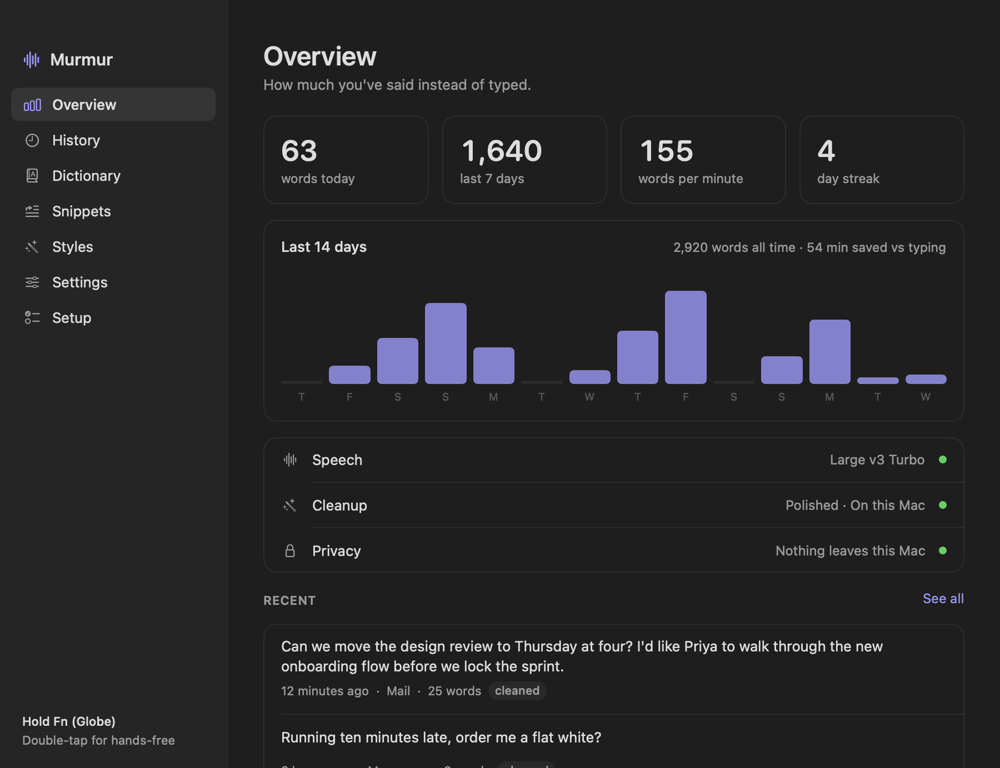

Murmur is a free dictation app for Mac. Hold a key, say what you mean, and let go. The words land in whatever app you're using, tidied up, and nothing you say leaves your computer.
Free and open source. macOS 14 or later, Apple silicon.
You already know what you want to say.
One key. No window to open.
Murmur lives in the menu bar and stays out of the way until you hold its key. It works in Mail, Messages, Notes, your browser, your editor, a terminal. Anywhere you can type.
Hold fn and talk
The orb appears and moves with your voice, so you know it's listening. Double-tap instead if you'd rather not hold the key.
Let go
The speech model runs on your Mac. A short sentence takes about half a second.
Read what you meant
The ums are gone and so are the false starts. If you corrected yourself halfway through, you get the correction.
Small enough to forget it's running.
One native app. No Python, no Electron, no server humming in the background. The speech model loads when you press the key and is released a few minutes after you stop, so it only costs memory while you're dictating.
| The whole app | 7.7 MB |
|---|---|
| Memory while idle | 11 MB |
| Processor while idle | 0.0% |
| A two-second sentence, typed in | about 0.5 s |
| Nine seconds of speech, typed in | about 0.8 s |
Measured on an M4 MacBook running macOS 27, with the model already loaded. The model itself is a separate 574 MB download.
Your voice stays on your Mac.
Transcription and cleanup both run on your computer. There's no account to make and nothing is measured or reported back.
Audio is never saved
It's held in memory while you speak and thrown away once it has been transcribed.
Two reasons to go online
Downloading the speech model once, and cleanup through your own API key if you turn that on. That sends text, never audio.
History is a file you own
Plain JSON in your Library folder. Keep it forever, keep it a week, or keep none of it.
It writes the way you'd have typed it.
Cleans up as it goes
Apple's on-device model fixes punctuation, drops filler, and keeps your corrections. If the sentence was already clean, it's left alone.
A different tone for each app
Set it once. Murmur checks which app is in front and writes to suit it.
See how much you've said
Words today, your speaking pace, and every dictation you've made, searchable. Copy one back out or paste the last one again.

Teach it your words
Add names and jargon to the dictionary so they're spelled right. Make snippets: say "my email" and get the address.
Hands-free when you need it
Double-tap the key and talk for as long as you like. Long dictations are transcribed phrase by phrase while you're still speaking.
Your clipboard, left alone
Whatever you had copied is put back after each dictation. Or keep the dictated text there instead. It's one switch.
Not only English
Pick from 20 languages or let Murmur work out which one you're speaking.
Three lines and you're dictating.
There isn't a ready-made download yet, so you build Murmur once from its source. It takes a few minutes and needs Apple's command line tools and Homebrew.
- You need macOS 14 or later on an Apple silicon Mac.
- On-device cleanup needs macOS 26 with Apple Intelligence turned on. Without it Murmur still transcribes and tidies with its own rules.
- Coming next a download you can just open, and a choice of colours for the orb.
brew install cmakegit clone https://github.com/CryptoChefA/murmur && cd murmur./build.sh --installThen open Murmur from Applications. It asks for the microphone and for Accessibility, which is how it sees the key and types for you, and downloads the speech model.